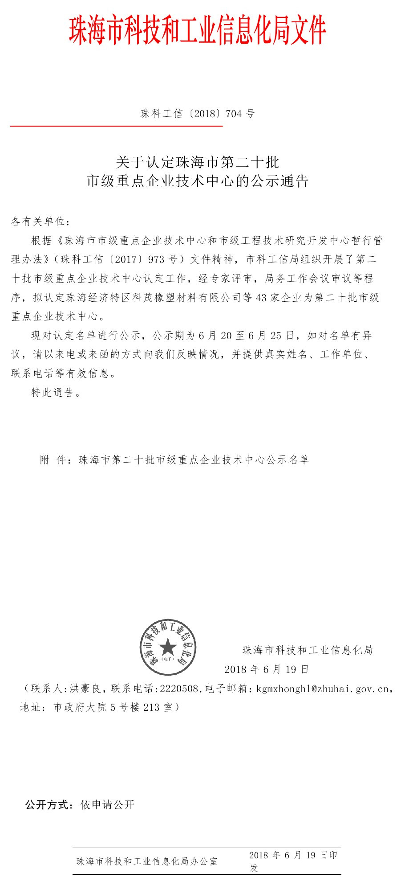

发布日期：2018-6-19
根据《珠海市市级重点企业技术中心和市级工程技术研究开发中心暂行管理办法》（珠科工信[2017]973号）文件精神，市科工信局组织开展了第二十批市级重点企业技术中心认定工作，经专家评审，局务工作会议审议等程序，德百祺成功被认定为第二十批市级重点企业技术中心。
查看全文根据《珠海市市级重点企业技术中心和市级工程技术研究开发中心暂行管理办法》（珠科工信[2017]973号）文件精神，市科工信局组织开展了第二十批市级重点企业技术中心认定工作，经专家评审，局务工作会议审议等程序，德百祺成功被认定为第二十批市级重点企业技术中心。
